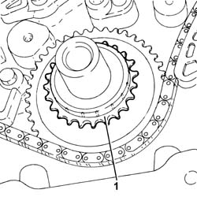
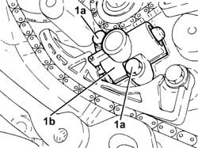
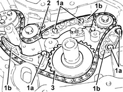
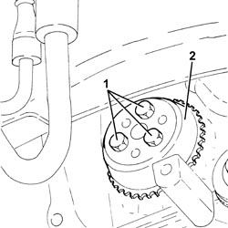
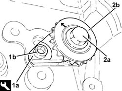
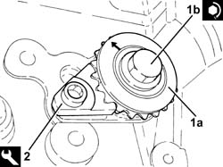
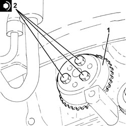
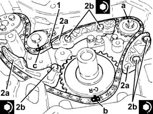
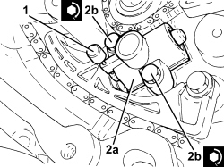

1092B91 WATER PUMP BALANCING SHAFT DRIVE CHAIN GEARS AND COMPONENTS R R
- Path
- Procedures > 10 ENGINE > 1092 ENGINE COMPONENT MISCELLANEOUS DRIVES > 1092B WATER PUMP AND ALTERNATOR DRIVE > 1092B91 WATER PUMP BALANCING SHAFT DRIVE CHAIN GEARS AND COMPONENTS R R
- Kind
- repair procedure (removal / refitting; the operation number is the code)
- Applies to
- engines: 2.2; all production periods
- Interactive page
- https://sloeber94.github.io/elrnDB-fCrm/en/#/194000417
Applies to: engines: 2.2; all production periods
 Removing
Removing
 Refitting
Refitting- Position the vehicle on a lift.
- Make sure that the ignition key is in the OFF position, then disconnect the battery terminal (-).
Description | Connector | |
|---|---|---|
- | Battery |
Op. 4450B04 RIGHT FRONT WHEEL - R.R
Op. 7055B66 ENGINE COMPARTMENT DUST COVER IN RIGHT FRONT WHEEL ARCH - R.R.
Op. 1032A12 TIMING SYSTEM DRIVE CHAIN - R.R
1. Remove the timing drive pulley.

Applies to: engines: 2.2; all production periods
1. Unscrew the bolts (1a) and remove the water pump/balancer shaft drive chain hydraulic tensioner.

Applies to: engines: 2.2; all production periods
1. Undo the bolts (1a) and remove the chain tensioner pads (1b).
2. Remove the water pump/balancing shafts drive chain.
3. Remove the water pump/balancing shafts drive chain pulley.

Applies to: engines: 2.2; all production periods
1. Using a suitable tool for counter-torque, undo the water pump drive gear fixing bolts.
2. Remove the water pump drive gear.

Applies to: engines: 2.2; all production periods
1. Fit the tool (1a) using the bolt (1b) for securing it (it is the bolt fixing the counter-balance shaft flange).
Tool | Description | Function | Validity |
|---|---|---|---|
2000000600 | Counter-torque | Loosen/tighten counter-balance shaft drive pullies fixing bolts | 2.2 |
2. Undo the bolt (2a) and remove the inlet side counter-balance shaft drive pulley (2b).
- Carry out the same operations for the exhaust side counter-balance shaft drive pulley.

Applies to: engines: 2.2; all production periods
Refitting
Removing1. Position the inlet side counter-balance shaft drive pulley (1a) in its housing and secure it tightening the bolt (1b) to the recommended torque.
Component | Fastening | dia | Value (daNm) | Validity |
|---|---|---|---|---|
Counter-balance shaft drive pullies | Bolt | M10 x 1.5 | (counter-balance shaft side) 2.0 + 30° + 15° | 2.2 |
2. Remove the tool used for counter-torque.
Tool | Description | Function | Validity |
|---|---|---|---|
2000000600 | Counter-torque | Loosen/tighten counter-balance shaft drive pullies fixing bolts | 2.2 |
- Tighten the bolt fixing the counter-balance shaft flange to the recommended torque.
Component | Fastening | dia | Value (daNm) | Validity |
|---|---|---|---|---|
Counter balance shafts | Bolt | M6 x 1 | (engine crankcase side) 0.9 | 2.2 |
- Carry out the same operations for the exhaust side counter-balance shaft drive pulley.

Applies to: engines: 2.2; all production periods
1. Place the water pump drive gear back in its housing.
2. Using a suitable tool for counter-torque, tighten the bolts fixing the water pump drive gear to the recommended torque.
Component | Fastening | dia | Value (daNm) | Validity |
|---|---|---|---|---|
Water pump drive pulley | Bolt | M6 x 1 | (water pump side) 0.8 | 2.2 |

Applies to: engines: 2.2; all production periods
- Place the water pump/balancing shafts drive chain pulley in its housing.
1. Position the references on the individual pullies as illustrated in the diagram, then proceed with fitting the water pump/balancing shafts drive chain following the order given below:
- inlet side balancing shaft
- timing chain drive pulley
- water pump drive gear
- exhaust side balancing shaft
following the instructions given below.
2. Place the chain tensioner pads (2a) in their housing and secure it by tightening the bolts (2b) to the recommended torque.
Component | Fastening | dia | Value (daNm) | Validity |
|---|---|---|---|---|
Water pump/balancing shafts drive chain pad(s) | Bolt | M6 x 1 | (engine crankcase side) 1.0 | 2.2 |

Applies to: engines: 2.2; all production periods
1. Fit a suitable pin (diameter 1.5 mm) to secure the counter-balance shafts and water pump drive chain tensioner.
2. Refit the water pump/balancer shaft drive chain hydraulic tensioner (2a) and secure by tightening bolts (2b) to the specified torque.
Component | Fastening | dia | Value (daNm) | Validity |
|---|---|---|---|---|
Water pump/balancing shafts drive chain hydraulic tensioner | Bolt | M6 x 1 | (engine crankcase side) 1.0 | 2.2 |
- Remove the pin from the counter-balance shaft drive chain tensioner and water pump.

Applies to: engines: 2.2; all production periods
- Place the timing drive chain pulley in its housing.
Op. 1032A12 TIMING SYSTEM DRIVE CHAIN - R.R
Op. 7055B66 ENGINE COMPARTMENT DUST COVER IN RIGHT FRONT WHEEL ARCH - R.R.
Op. 4450B04 RIGHT FRONT WHEEL - R.R
- Connect the negative battery terminal.
Op. 0010T11 ENGINE OIL - CHECK LEVEL AND TOP UP, IF NECESSARY
- Remove the vehicle from the lift.
Topics linked from this page (5)
- 0010T11 ENGINE OIL - CHECK LEVEL AND TOP UP, IF NECESSARY
- 1032A12 TIMING SYSTEM DRIVE CHAIN - R.R
- 4450B04 RIGHT FRONT WHEEL - R.R
- 7055B66 ENGINE COMPARTMENT DUST COVER IN RIGHT FRONT WHEEL ARCH - R.R.
- A001 BATTERY